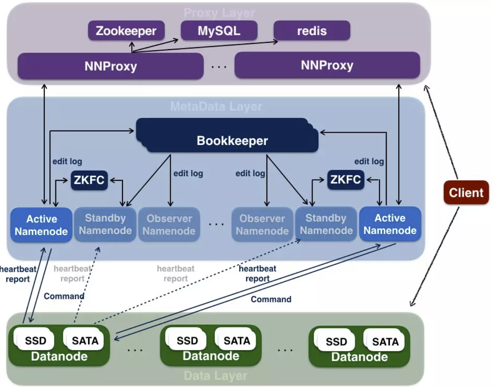
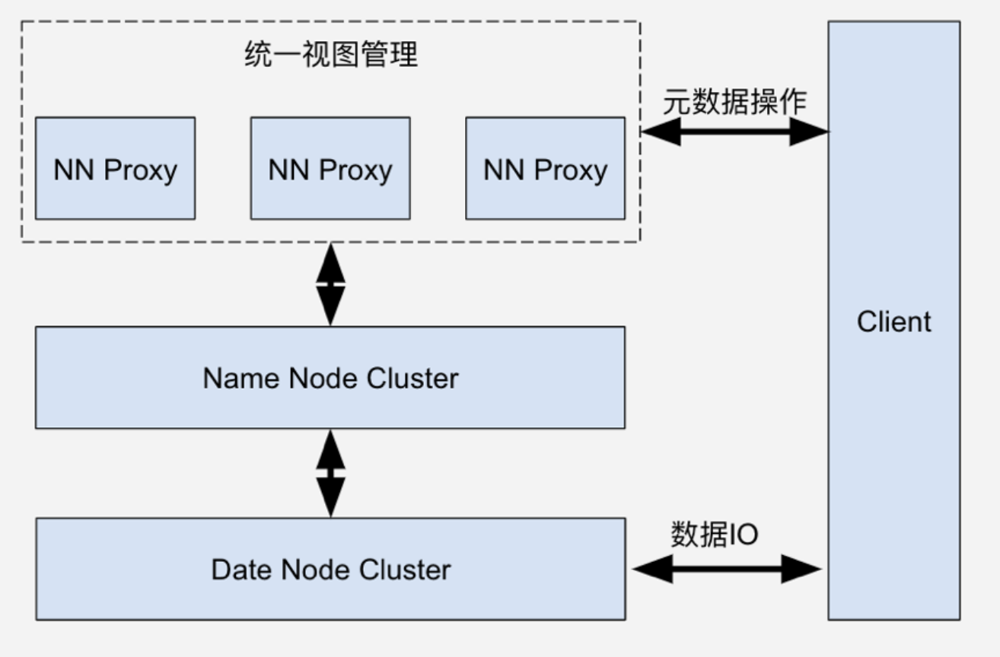
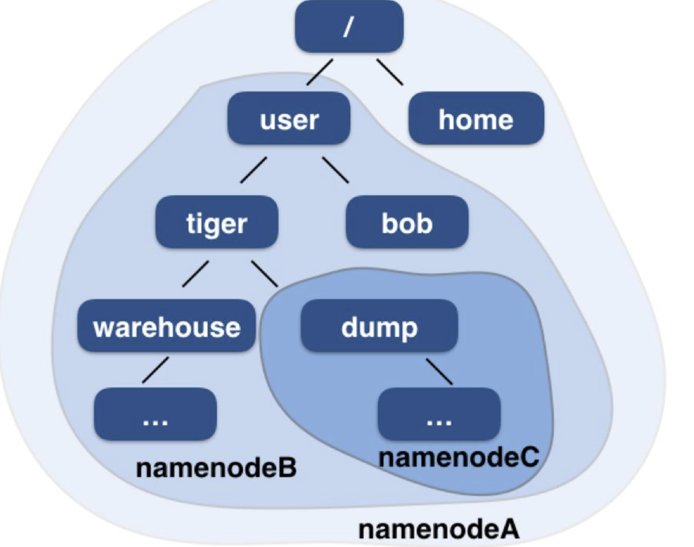
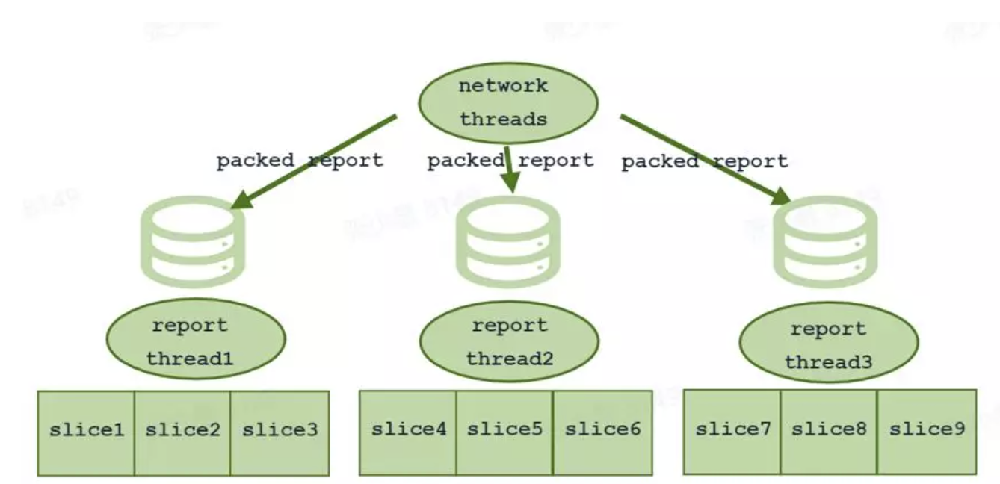
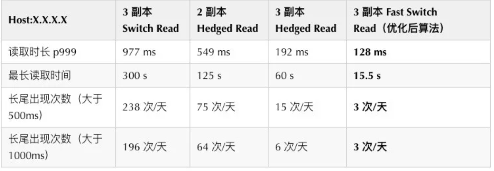
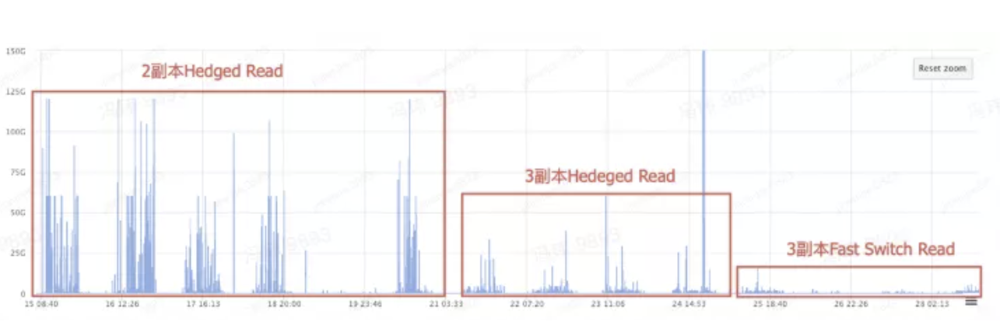
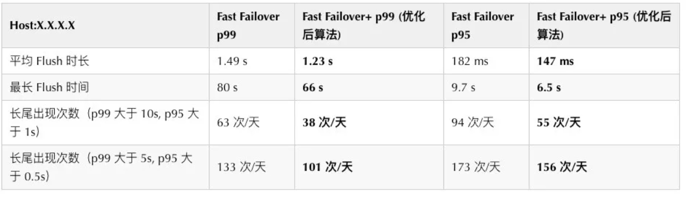
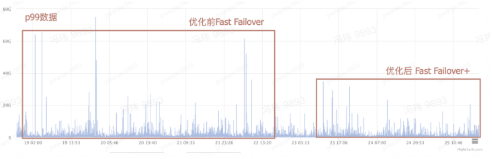

字节跳动 EB 级 HDFS 实践
本文选自“字节跳动基础架构实践”系列文章。
“字节跳动基础架构实践”系列文章是由字节跳动基础架构部门各技术团队及专家倾力打造的技术干货内容，和大家分享团队在基础架构发展和演进过程中的实践经验与教训，与各位技术同学一起交流成长。
作为目前字节跳动内部存储量及集群规模最大的分布式存储系统，HDFS 一直伴随着字节跳动关键业务的飞速扩张而快速发展。本文会从 HDFS 发展历程入手，介绍发展路径上的重大挑战及解决方案。
HDFS 简介
因为 HDFS 这样一个系统已经存在了非常长的时间，应用的场景已经非常成熟了，所以这部分我们会比较简单地介绍。
HDFS 全名 Hadoop Distributed File System，是业界使用最广泛的开源分布式文件系统。原理和架构与 Google 的 GFS 基本一致。它的特点主要有以下几项：
- 和本地文件系统一样的目录树视图
- Append Only 的写入（不支持随机写）
- 顺序和随机读
- 超大数据规模
- 易扩展，容错率高
字节跳动特色的 HDFS
字节跳动应用 HDFS 已经非常长的时间了，经历了 7 年的发展，目前已直接支持了十多种数据平台，间接支持了上百种业务发展。从集群规模和数据量来说，HDFS 平台在公司内部已经成长为总数几万台服务器的大平台，支持了 EB 级别的数据量。
在深入相关的技术细节之前，我们先看看字节跳动的 HDFS 架构。
架构介绍

接入层
接入层是区别于社区版本最大的一层，社区版本中并无这一层定义。在字节跳动的落地实践中，由于集群的节点过于庞大，我们需要非常多的 NameNode 实现联邦机制来接入不同上层业务的数据服务。但当 NameNode 数量也变得非常多了以后，用户请求的统一接入及统一视图的管理也会有很大的问题。为了解决用户接入过于分散，我们需要一个独立的接入层来支持用户请求的统一接入，转发路由；同时也能结合业务提供用户权限和流量控制能力；另外，该接入层也需要提供对外的目录树统一视图。
该接入层从部署形态上来讲，依赖于一些外部组件如 Redis，MySQL 等，会有一批无状态的 NNProxy 组成，他们提供了请求路由，Quota 限制，Tracing 能力及流量限速等能力。
元数据层
这一层主要模块有 Name Node，ZKFC，和 BookKeeper（不同于 QJM，BookKeeper 在大规模多节点数据同步上来讲会表现得更稳定可靠）。
Name Node 负责存储整个 HDFS 集群的元数据信息，是整个系统的大脑。一旦故障，整个集群都会陷入不可用状态。因此 Name Node 有一套基于 ZKFC 的主从热备的高可用方案。
Name Node 还面临着扩展性的问题，单机承载能力始终受限。于是 HDFS 引入了联邦（Federation）机制。一个集群中可以部署多组 Name Node，它们独立维护自己的元数据，共用 Data Node 存储资源。这样，一个 HDFS 集群就可以无限扩展了。但是这种 Federation 机制下，每一组 Name Node 的目录树都互相割裂的。于是又出现了一些解决方案，能够使整个 Federation 集群对外提供一个完整目录树的视图。
数据层
相比元数据层，数据层主要节点是 Data Node。Data Node 负责实际的数据存储和读取。用户文件被切分成块复制成多副本，每个副本都存在不同的 Data Node 上，以达到容错容灾的效果。每个副本在 Data Node 上都以文件的形式存储，元信息在启动时被加载到内存中。
Data Node 会定时向 Name Node 做心跳汇报，并且周期性将自己所存储的副本信息汇报给 Name Node。这个过程对 Federation 中的每个集群都是独立完成的。在心跳汇报的返回结果中，会携带 Name Node 对 Data Node 下发的指令，例如，需要将某个副本拷贝到另外一台 Data Node 或者将某个副本删除等。
主要业务
先来看一下当前在字节跳动 HDFS 承载的主要业务：
- Hive，HBase，日志服务，Kafka 数据存储
- Yarn，Flink 的计算框架平台数据
- Spark，MapReduce 的计算相关数据存储
发展阶段
在字节跳动，随着业务的快速发展，HDFS 的数据量和集群规模快速扩大，原来的 HDFS 的集群从几百台，迅速突破千台和万台的规模。这中间，踩了无数的坑，大的阶段归纳起来会有这样几个阶段。
第一阶段
业务增长初期，集群规模增长趋势非常陡峭，单集群规模很快在元数据服务器 Name Node 侧遇到瓶颈。引入联邦机制（Federation）实现集群的横向扩展。
联邦又带来统一命名空间问题，因此，需要统一视图空间帮助业务构建统一接入。这里我们引入了 Name Node Proxy 组件实现统一视图和多租户管理等功能。为了解决这个问题，我们引入了 Name Node Proxy 组件实现统一视图和多租户管理等功能，这部分会在下文的 NNProxy 章节中介绍。
第二阶段
数据量继续增大，Federation 方式下的目录树管理也存在瓶颈，主要体现在数据量增大后，Java 版本的 GC 变得更加频繁，跨子树迁移节点代价过大，节点启动时间太长等问题。因此我们通过重构的方式，解决了 GC，锁优化，启动加速等问题，将原 Name Node 的服务能力进一步提高。容纳更多的元数据信息。为了解决这个问题，我们也实现了字节跳动特色的 DanceNN 组件，兼容了原有 Java 版本 NameNode 的全部功能基础上，大大增强了稳定性和性能。相关详细介绍会在下面的 DanceNN 章节中介绍。
第三阶段
当数据量跨过 EB，集群规模扩大到几万台的时候，慢节点问题，更细粒度服务分级问题，成本问题和元数据瓶颈进一步凸显。我们在架构上进一步在包括完善多租户体系构建，重构数据节点和元数据分层等方向进一步演进。这部分目前正在进行中，因为优化的点会非常多，本文会给出慢节点优化的落地实践。
关键改进
在整个架构演进的过程中，我们做了非常多的探索和尝试。如上所述，结合之前提到的几个大的挑战和问题，我们就其中关键的 Name Node Proxy 和 Dance Name Node 这两个重点组件做一下介绍，同时，也会介绍一下我们在慢节点方面的优化和改进。
NNProxy（Name Node Proxy）
作为系统的元数据操作接入端，NNProxy 提供了联邦模式下统一元数据视图，解决了用户请求的统一转发，业务流量的统一管控的问题。
先介绍一下 NNProxy 所处的系统上下游。

我们先来看一下 NNProxy 都做了什么工作。
路由管理
在上面 Federation 的介绍中提到，每个集群都维护自己独立的目录树，无法对外提供一个完整的目录树视图。NNProxy 中的路由管理就解决了这个问题。路由管理存储了一张 mount table，表中记录若干条路径到集群的映射关系。
例如 /user -> hdfs://namenodeB，这条映射关系的含义就是 /user 及其子目录这个目录在 namenodeB 这个集群上，所有对 /user 及其子目录的访问都会由 NNProxy 转发给 namenodeB，获取结果后再返回给 Client。
匹配原则为最长匹配，例如我们还有另外一条映射 /user/tiger/dump -> hdfs://namenodeC，那么 /user/tiger/dump 及其所有子目录都在 namenodeC，而 /user 目录下其他子目录都在 namenodeB 上。如下图所示：

Quota 限制
使用过 HDFS 的同学会知道 Quota 这个概念。我们给每个目录集合分配了额定的空间资源，一旦使用超过这个阈值，就会被禁止写入。这个工作就是由 NNProxy 完成的。NNProxy 会通过 Quota 实时监控系统获取最新 Quota 使用情况，当用户进行元数据操作的时候，NNProxy 就会根据用户的 Quota 情况作出判断，决定通过或者拒绝。
Trace 支持
ByteTrace 是一个 Trace 系统，记录追踪用户和系统以及系统之间的调用行为，以达到分析和运维的目的。其中的 Trace 信息会附在向 NNProxy 的请求 RPC 中。NNProxy 拿到 ByteTrace 以后就可以知道当前请求的上游模块，USER 及 Application ID 等信息。NNProxy 一方面将这些信息发到 Kafka 做一些离线分析，一方面实时聚合并打点，以便追溯线上流量。
流量限制
虽然 NNProxy 非常轻量，可以承受很高的 QPS，但是后端的 Name Node 承载能力是有限的。因此突发的大作业造成高 QPS 的读写请求被全量转发到 Name Node 上时，会造成 Name Node 过载，延时变高，甚至出现 OOM，影响集群上所有用户。因此 NNProxy 另一个非常重要的任务就是限流，以保护后端 Name Node。目前限流基于路径+RPC 以及 用户+RPC 维度，例如我们可以限制 /user/tiger/warhouse 路径的 create 请求为 100 QPS，或者某个用户的 delete 请求为 5 QPS。一旦该用户的访问量超过这个阈值，NNProxy 会返回一个可重试异常，Client 收到这个异常后会重试。因此被限流的路径或用户会感觉到访问 HDFS 变慢，但是并不会失败。
Dance NN（Dance Name Node）
解决的问题
如前所述，在数据量上到 EB 级别的场景后，原有的 Java 版本的 Name Node 存在了非常多的线上问题需要解决。以下是在实践过程中我们遇到的一些问题总结：
- Java 版本 Name Node 采用 Java 语言开发，在 INode 规模上亿时，不可避免的会带来严重的 GC 问题；
- Java 版本 Name Node 将 INode meta 信息完全放置于内存，10 亿 INode 大约占用 800GB 内存（包含 JVM 自身占用的部分 native memory），更进一步加重了 GC；
- 我们目前的集群规模下，Name Node 从重启到恢复服务需要 6 个小时，在主备同时发生故障的情况下，严重影响上层业务；
- Java 版本 Name Node 全局一把读写锁，任何对目录树的修改操作都会阻塞其他的读写操作，并发度较低；
从上可以看出，在大数据量场景下，我们亟需一个新架构版本的 Name Node 来承载我们的海量元数据。除了 C++语言重写来规避 Java 带来的 GC 问题以外，我们还在一些场景下做了特殊的优化。
目录树锁设计
HDFS 对内是一个分布式集群，对外提供的是一个 unified 的文件系统，因此对文件及目录的操作需要像操作 Linux 本地文件系统一样。这就要求 HDFS 满足类似于数据库系统中 ACID 特性一样的原子性，一致性、隔离性和持久性。因此 DanceNN 在面对多个用户同时操作同一个文件或者同一个目录时，需要保证不会破坏掉 ACID 属性，需要对操作做锁保护。
不同于传统的 KV 存储和数据库表结构，DanceNN 上维护的是一棵树状的数据结构，因此单纯的 key 锁或者行锁在 DanceNN 下不适用。而像数据库的表锁或者原生 NN 的做法，对整棵目录树加单独一把锁又会严重的影响整体吞吐和延迟，因此 DanceNN 重新设计了树状锁结构，做到保证 ACID 的情况下，读吞吐能够到 8w，写吞吐能够到 2w，是原生 NN 性能的 10 倍以上。
这里，我们会重新对 RPC 做分类，像 createFile，getFileInfo，setXAttr 这类 RPC 依然是简单的对某一个 INode 进行 CURD 操作；像 delete RPC，有可能删除一个文件，也有可能会删除目录，后者会影响整棵子树下的所有文件；像 rename RPC，则是更复杂的另外一类操作，可能会涉及到多个 INode，甚至是多棵子树下的所有 INode。
DanceNN 启动优化
由于我们的 DanceNN 底层元数据实现了本地目录树管理结构，因此我们 DanceNN 的启动优化都是围绕着这样的设计来做的。
多线程扫描和填充 BlockMap
在系统启动过程中，第一步就是读取目录树中保存的信息并且填入 BlockMap 中，类似 Java 版 NN 读取 FSImage 的操作。在具体实现过程中，首先起多个线程并行扫描静态目录树结构。将扫描的结果放入一个加锁的 Buffer 中。当 Buffer 中的元素个数达到设定的数量以后，重新生成一个新的 Buffer 接收请求，并在老 Buffer 上起一个线程将数据填入 BlockMap。
接收块上报优化
DanceNN 启动以后会首先进入安全模式，接收所有 Date Node 的块上报，完善 BlockMap 中保存的信息。当上报的 Date Node 达到一定比例以后，才会退出安全模式，这时候才能正式接收 client 的请求。所以接收块上报的速度也会影响 Date Node 的启动时长。DanceNN 这里做了一个优化，根据 BlockID 将不同请求分配给不同的线程处理，每个线程负责固定的 Slice，线程之间无竞争，这样就极大的加快了接收块上报的速度。如下图所示：

慢节点优化
慢节点问题在很多分布式系统中都存在。其产生的原因通常为上层业务的热点或者底层资源故障。上层业务热点，会导致一些数据在较短的时间段内被集中访问。而底层资源故障，如出现慢盘或者盘损坏，更多的请求就会集中到某一个副本节点上从而导致慢节点。
通常来说，慢节点问题的优化和上层业务需求及底层资源量有很大的关系，极端情况，上层请求很小，下层资源充分富裕的情况下，慢节点问题将会非常少，反之则会变得非常严重。在字节跳动的 HDFS 集群中，慢节点问题一度非常严重，尤其是磁盘占用百分比非常高以后，各种慢节点问题层出不穷。其根本原因就是资源的平衡滞后，许多机器的磁盘占用已经触及红线导致写降级；新增热资源则会集中到少量机器上，这种情况下，当上层业务的每秒请求数升高后，对于 P999 时延要求比较高的一些大数据分析查询业务就容易出现一大批数据访问（>10000 请求）被卡在某个慢请求的处理上。
我们优化的方向会分为读慢节点和写慢节点两个方面。
读慢节点优化
我们经历了几个阶段：
- 最早，使用社区版本，其 Switch Read 以读取一个 packet 的时长为统计单位，当读取一个 packet 的时间超过阈值时，认为读取当前 packet 超时。如果一定时间窗口内超时 packet 的数量过多，则认为当前节点是慢节点。但这个问题在于以 packet 作为统计单位使得算法不够敏感，这样使得每次读慢节点发生的时候，对于小 IO 场景（字节跳动的一些业务是以大量随机小 IO 为典型使用场景的），这些个积攒的 Packet 已经造成了问题。
- 后续，我们研发了 Hedged Read 的读优化。Hedged Read 对每一次读取设置一个超时时间。如果读取超时，那么会另开一个线程，在新的线程中向第二个副本发起读请求，最后取第一第二个副本上优先返回的 response 作为读取的结果。但这种情况下，在慢节点集中发生的时候，会导致读流量放大。严重的时候甚至导致小范围带宽短时间内不可用。
- 基于之前的经验，我们进一步优化，开启了 Fast Switch Read 的优化，该优化方式使用吞吐量作为判断慢节点的标准，当一段时间窗口内的吞吐量小于阈值时，认为当前节点是慢节点。并且根据当前的读取状况动态地调整阈值，动态改变时间窗口的长度以及吞吐量阈值的大小。下表是当时线上某业务测试的值：

进一步的相关测试数据：

写慢节点优化
写慢节点优化的适用场景会相对简单一些。主要解决的是写过程中，Pipeline 的中间节点变慢的情况。为了解决这个问题，我们也发展了 Fast Failover 和 Fast Failover+两种算法。
Fast Failover
Fast Failover 会维护一段时间内 ACK 时间过长的 packet 数目，当超时 ACK 的数量超过阈值后，会结束当前的 block，向 namenode 申请新块继续写入。
Fast Failover 的问题在于，随意结束当前的 block 会造成系统的小 block 数目增加，给之后的读取速度以及 namenode 的元数据维护都带来负面影响。所以 Fast Failover 维护了一个切换阈值，如果已写入的数据量（block 的大小）大于这个阈值，才会进行 block 切换。
但是往往为了达到这个写入数据大小阈值，就会造成用户难以接收的延迟，因此当数据量小于阈时需要进额外的优化。
Fast Failover+
为了解决上述的问题，当已写入的数据量（block 的大小）小于阈值时，我们引入了新的优化手段——Fast Failover+。该算法首先从 pipeline 中筛选出速度较慢的 datanode，将慢节点从当前 pipeline 中剔除，并进入 Pipeline Recovery 阶段。Pipeline Recovery 会向 namenode 申请一个新的 datanode，与剩下的 datanode 组成一个新的 pipeline，并将已写入的数据同步到新的 datanode 上（该步骤称为 transfer block）。由于已经写入的数据量较小，transfer block 的耗时并不高。统计 p999 平均耗时只有 150ms。由 Pipeline Recovery 所带来的额外消耗是可接受的。
下表是当时线上某业务测试的值：

一些进一步的实际效果对比：

结尾
HDFS 在字节跳动的发展历程已经非常长了。从最初的几百台的集群规模支持 PB 级别的数据量，到现在几万台级别多集群的平台支持 EB 级别的数据量，我们经历了 7 年的发展。伴随着业务的快速上量，我们团队也经历了野蛮式爆发，规模化发展，平台化运营的阶段。这过程中我们踩了不少坑，也积累了相当丰富的经验。当然，最重要的，公司还在持续高速发展，而我们仍旧不忘初心，坚持“DAY ONE”，继续在路上。
字节跳动基础架构团队
字节跳动基础架构团队是支撑字节跳动旗下包括抖音、今日头条、西瓜视频、火山小视频在内的多款亿级规模用户产品平稳运行的重要团队，为字节跳动及旗下业务的快速稳定发展提供了保证和推动力。
公司内，基础架构团队主要负责字节跳动私有云建设，管理数以万计服务器规模的集群，负责数万台计算/存储混合部署和在线/离线混合部署，支持若干 EB 海量数据的稳定存储。
文化上，团队积极拥抱开源和创新的软硬件架构。我们长期招聘基础架构方向的同学，具体可参见 job.bytedance.com（文末“阅读原文”），感兴趣可以联系邮箱 **guoxinyu.0372@bytedance.com** 。